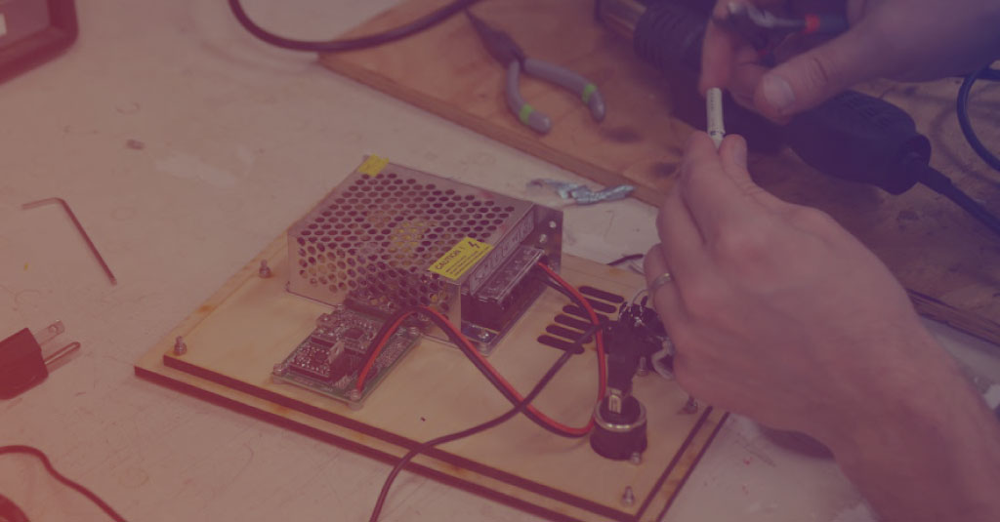

Date and Time
Register
Home
About
Services
Contact
The aim of this event is to bring together the different design and maker oriented groups in the CU community together to share knowledge and learn by doing.
Home
We in this